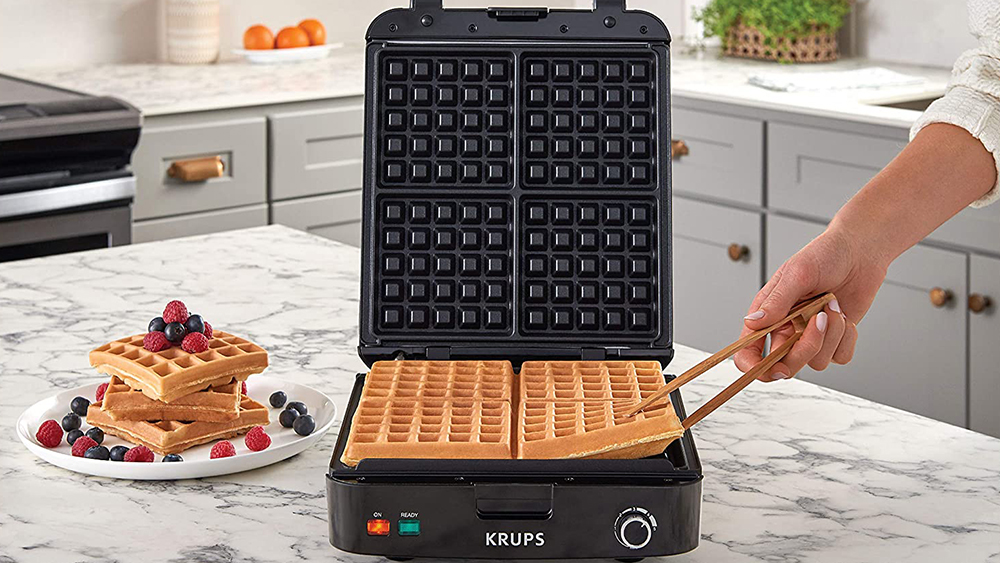
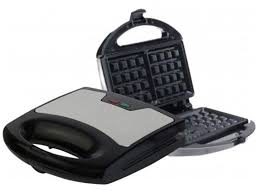

Waffle Maker turns a gastronomic treat into a treat for the eyes, too. Its non-stick interior makes one large or five smaller, heart-shaped waffles Adjustable Temperature Control For Light and Fluffy Or Crispy Waffles, Non-Stick, Cool Touch Handle, Power On and Ready Indicator Lights, 8" Round Baking Plate, Measures 8.5"L.You can make varieties of foods with waffle maker. If you prepare the food by yourself, it is certain that you will use fresh and healthy ingredients. You can also make your own homemade healthier foods, which are certainly the best.


REASONS WHY YOU SHOULD HAVE A WAFFLEMAKER IN YOUR KITCHEN
Saves money:many spends more on eating out each week than they do on groceries for their own kitchen. You’d be effectively saving hundreds of rands with just the one wafflemake that can last for many years. And you can have your waffles anyway your like and anytime.
Saves time:When you get a craving for waffles, you’ll likely head to your favorite diner or restaurant to get a fix. However, if you have a waffle maker that can get you the perfect combination of fluffy and crispy waffles, you can whip them up in under 5 minutes. Compared to getting the family ready and heading out to a restaurant, this can save phenomenal time. Waffle makers also prepare an easy and mess-free breakfast option to save you time in the morning.
Customizable:If you order your waffles at a restaurant, you’re pretty much stuck with how they make their batter and what toppings are listed on the menu. However, having your own quality waffle maker gives you freedom to make the batter the way you like it and select any topping you enjoy . This is particularly handy for families as you’ll be able to create a waffle to suit everyone’s tastes and dietary requirements.
Healthier:You can choose to make them so much healthier! There are plenty of waffles recipes available now that are low fat, low sugar, gluten free, dairy free, and any other requirements you might have. Not only that, but you can top them with fresh fruit and homemade toppings for a more nutritious option for your kids.
Versitile:Having a waffle maker at home isn’t only a great appliance to make breakfast with, they can be even more versatile than you think. There are countless ways to turn your waffles into a savory treat fit for eating at lunch or dinner and it’s all possible with just one product.
TYPES OF WAFFLEMAKERS
The world of waffle makers can be quite vast with a number of different types of waffle makers to choose from. Because there are so many different types of waffles themselves. Below are types of waffle makers you can choose from: